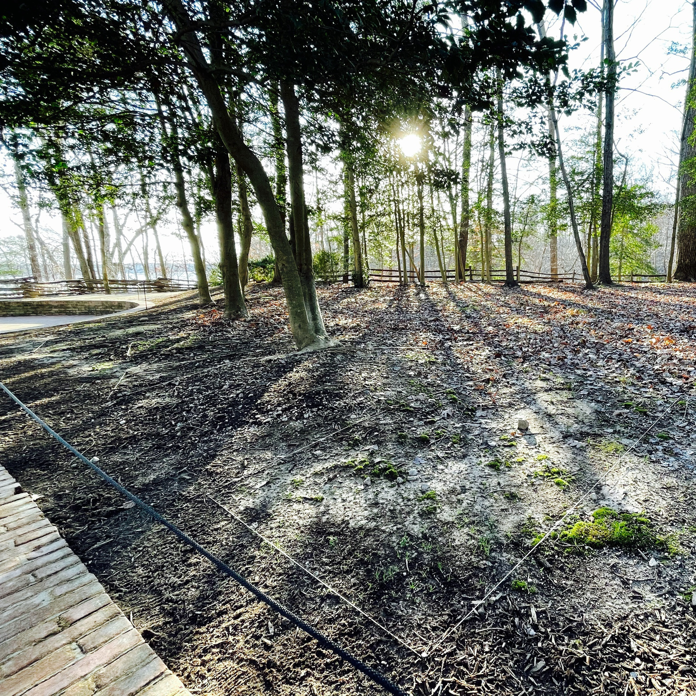
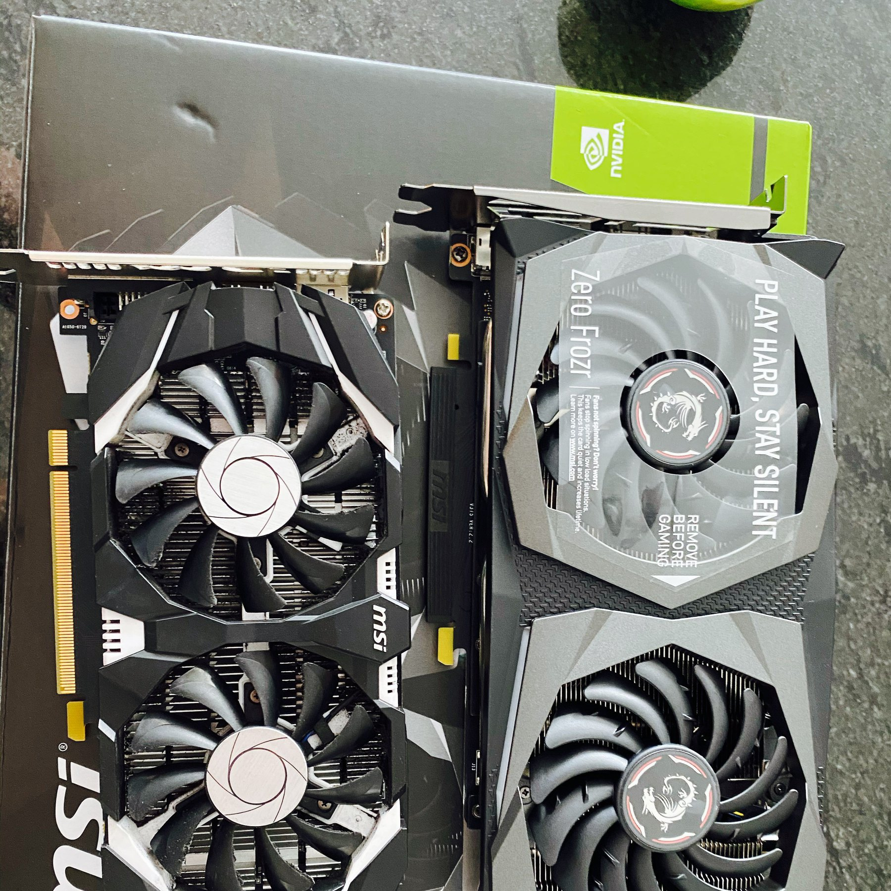

Took a trip to Mount Vernon yesterday. I know it wasn’t as idyllic as it seems, but walking through the grounds, closing my eyes, and using my imagination, I was almost able to hear the 18th century lifestyle.

Why have I grown to hate the word “albeit”? There’s something about it that makes me want to smash it in the face.
Took the boy to do some plane spotting on a dreary evening near BWI. With COVID keeping air traffic down it was mostly SWA 737 7-8s.

Dipping my toes into the YouTube creator lifestyle. www.youtube.com/watch
I’ve largely been avoiding the decision on my presidential vote, mostly because I feel like the options are so limited and I’m unhappy with the front runners. I guess it’s time to dive a little deeper and figure out what to do…
Enjoyed an evening of outdoor dining and cupcakes to celebrate my son’s 11th baptism anniversary. Such a nice evening!

Cuties on Netflix
🎦 After reading a few articles about “Cuties”, especially this one from USA Today where the author states “…confronts the horrid reality of how accessible imagery and videos can negatively impact children.” I think I just need to watch it and see what it’s all about. The imagery is vile, but perhaps that’s the point? I’ll report back later.
{kind=link}
{kind=link}
💭 The problem with taking showers (for me), is that I walk out bursting with ideas. Is it because there are no distractions, the white noise of the water? I regularly have to add several things to my to-do list after a shower. Is it just me?
There’s nothing wrong with a 43 year old man watching Supergirl is there? I don’t even consider it a guilty pleasure.
{kind=link}
📖 I’ve not read alot of mystery books, but I just completed The Murder at the Vicarage by Agatha Christie. I love the period and it has so many moving parts. I don’t read alot of myster books, but I loved this one, and I’m a sucker for the writing of the period. Any reccs?
My son needed a new graphics card for the new Microsoft Flight simulator game so we picked up the GeForce GTX 1660 Super. He was terribly upset it only took about a minute to replace the older one. Made a huge difference but still can’t run the game at full quality. It’s crazy!

Played a bit of scrabble with the little one. Our modified rules said you could use acronyms. Let me tell you, there is an acronym for EVERYTHING. And yes, this is a very old Scrabble board. My family and I used to play together, and apparently my sister loved to doodle all over the box. I now know that she loved Duran Duran and that she rocks, evidently.

This is the quintissential “hello world” for the blogsphere. As much as I write on a regular basis for my work at Numinous.FM, my career work as a technical consultant, and my novels, I haven’t regularly posted a blog. I hope to change that going forward, as well as start contributing to the IndieWeb culture. I’m moving over from a Wordpress Blog, so things are a bit sparse here, but in time I hope to add more content.
Find any photo from the NASA Astronomy Picture of the Day Library
I just discovered this fantastic search engine for the NASA Astronomy Picture of the Day library. It’s written by Stuart who runs the @apod twitter account and blogs at http://www.strudel.org.uk/blog/astro/. Stuart chronicles why he wrote the search engine (spoiler: government shutdown) and goes a bit into some of the technical work to make it happen. He’s also the man behind this excellent Virtual Sky HTML5 Planetarium. If you’re an astronomy nerd, Stuarts’s web site ought to get your heart rate going.
I’m currently in the tail end of a writing project and I’ve used the APOD search to get photo inspiration, descriptive support of astronomical objects in my story, and sadly, to procrastinate while dealing with writer’s block. It’s a great tool. Go check it out.
3 options for documenting your story's universe
** Update 2013-10-25 to include nValt
You’ve spent months and months developing the backstory, characters, and places for your story. You’ve obsessed over every detail. For instance you know that your main character loves pizza with anchovies but only on Tuesday and only when he’s eating at home. You’ve designed a planet where the terraforming process has left the swamps smelling like flatulence and the natives looking like glow-in-the-dark bobble heads.
But now that you’re deep in your writing you need to remember those details so that you don’t send your hero running in the nausea-inducing forest of your terraformed planet without a gas mask. Where do you look? How are you storing this massive Tolkien-ish universe you’ve built? Should you? Yes! Documenting your created universe so that you always have a place to reference your characters and settings.
I’m in the middle of writing a science fiction story for kids and I’m struggling with the same question. Here are my list of requirements:
- I need a way to create relationships between items. If a character lives on a terraformed planet I should be able to link the character to the planet bidirectionally and list all of the characters of importance that also live on that planet.
- I need a way to search across all items. This is a no-brainer. I remember vaguely that one of my characters had an obsession with peanut butter. But which one?
- I need to update my universe at any time no matter where I am. Like many of us, I’m on the go quite a bit. So access to from my iPad, browser, and even in some offline capacity would be very useful.
- I need to eventually share my universe with a publisher/agent and with the public. Why would I want to expose my universe to the outside world? Because I eventually want to get published. Any tool that conveys the depth of my story will help me to get published (so I hope). Plus, I would love to eventually let fans explore the universe on their own and maybe even contribute to it based on what they’ve read in the book(s).
- I need to display images, video, and audio. I document my universe using diagrams, photos, video clips, and even audio clippings (mostly from my commute to work). These content types should all be viewable within the library.
- I need to reference the library no matter where I am. This is the one requirement that is seemingly at odds with #3 and #4 above. I might need access while on a plane or while sitting at my son’s basketball practice where there’s no signal.
Option #1 - Build an actual Wiki
Wikis have been around for a long time. They’re easy to edit and many of the newer wiki types let you embed video and audio. Creating links between documents is easy. Users can edit wikis themselves and you can even mark some hosted wikis as private if the wiki provider offers that feature. The problem with most wikis is that there is no offline access to them with the option to synch up changes you’ve made while offline. I looked at Flying Meat’s VoodooPad and it comes close. It offers a Web Export option that creates static HTML pages for your entire wiki. They even offer an iOS client that lets you edit files on the go if you use Dropbox to store your VooDooPad file. The software costs $40 but they do offer a free trial. I’m currently evaluating this solution. My main question as of now is whether or not you can sync the entire wiki offline on the iOS client for viewing offline.Option #2 - Evernote
If you’re into information management you’ve already heard of Evernote. It’s the uber note taking and digital collection platform that runs on the web, desktop, and mobile devices. I created an Evernote notebook and created notes for various characters. Then I linked them together by creating an index note with links to the individual notes. The process is cumbersome. Dragging and dropping on the desktop is easy, but editing the links between notes on their mobile devices is difficult. I did find some handy AppleScript code to automate this but it didn’t work well and resulted in even more work for me.Evernote will let you share your notebooks to individuals or to the entire web using a Public Link. Here’s an example of this. Notice the lack of any real organization, sorting, and hierarchy. If you have a Premium account you can sync the notes and notebooks offline to your devices. Sharing the notebook to the world is easy, but editing requires an Evernote account and explicitly granting permissions to the editor. This might be fine if you’re working with an agent/publisher/editor but not ideal for the public.
If you’re already using Evernote to keep track of your universe while you’re writing, this option might be a natural progression.
So these are just two options that I’m currently playing with. Are you a writer? Do you have similar requirements? What do you do? Please let me know in the comments.
Option #3 - nValt
nValt is a simple yet powerful note-taking software that allows you to create simple text notes using your keyboard. I like it because you can very quickly create new documents that link to each other. Just start typing a title, hit Enter and you have a text file. Once in you’re in your text file, put something in brackets like this: [[Characters]], and nValt turns that into a link. Click the link, hit Enter, and you have your Characters document. No, it doesn’t export easily and it doesn’t support images or videos, but it has the option to save each note as a file which you can sync with Dropbox and thus edit on any device you want. I wish I could create notes and links this easily in Evernote. If you don’t need images or video or any kind of rich text (although nValt does support Markdown), this might be a lightning-fast way to get your universe documented.